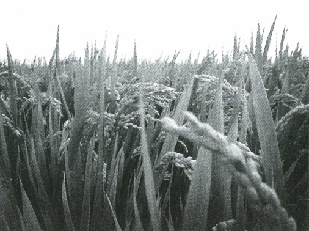
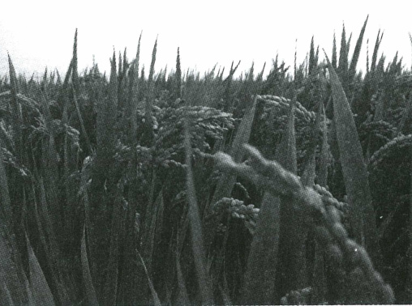

📘 Các tab 一 → 六 đi đúng thứ tự mục trong sách (热身 → 词语 → 语言点 → 主课文 → 副课文 → 拓展练习). Các tab ⭐ là phần ôn luyện bổ sung ngoài sách. Mục đánh dấu ⭐ Bổ sung là bài tập tự soạn thêm.
一、热身 — Khởi động
二、词语 — Từ mới (26 từ)
专有名词 / 外来词 — Tên riêng & từ nước ngoài trong bài
| Chữ Hán | Pinyin | Nghĩa |
|---|---|---|
| 麻婆豆腐 | mápó dòufu | đậu phụ Ma Bà (món cay nổi tiếng của Tứ Xuyên) |
| 朋友圈 | péngyouquān | "vòng bạn bè" — trang tin (Moments) trong WeChat |
| Facebook、Instagram | — | mạng xã hội nước ngoài; trong bài đọc thẳng tên tiếng Anh |
| 年夜饭 | niányèfàn | bữa cơm tất niên đêm giao thừa (trong bài đọc 《一年一张全家福》) |
词语活动 1 — 看下面的文字或图片，说一说是你学习的哪个词语
词语活动 2 — 听句子，将你听懂的意思说出来 (04-1)
听句子，将你听懂的意思说出来。Nghe từng câu rồi chọn nghĩa tiếng Việt đúng.
⭐ Bổ sung Bài tập điền từ (26 câu)
Chọn từ đúng để hoàn thành câu giao tiếp hằng ngày (tự soạn, ngoài sách).
三、语言点 — “V₁了 + V₂” 格式
Cấu trúc “V₁了 + V₂” — Làm xong việc 1 rồi mới làm việc 2
“V₁了 + V₂” biểu thị: hoàn thành hành động trước (V₁) rồi mới bắt đầu hành động sau (V₂). 了 ở đây đánh dấu V₁ đã xong so với V₂, nên dùng được cho cả quá khứ lẫn tương lai.
“V₁了 + V₂” cũng có thể nói thành “V₁了以后 + V₂”:
① Cú pháp (syntax)
了 đứng ngay sau V₁, trước tân ngữ: 吃了饭、下了课、拍了照片 (không nói 吃饭了就……). Với động từ ly hợp (下课、拍照、吃饭) thì 了 chen vào giữa: 下了课、拍了照. Nếu có bổ ngữ kết quả thì 了 đứng sau bổ ngữ: 吃完了饭、讨论完了. Vế sau thường có 就 (ngay sau đó) hoặc 再 (rồi mới — dùng cho việc chưa xảy ra); 就/再 đứng sau chủ ngữ của vế 2.② Ngữ nghĩa (semantics)
了 sau V₁ chỉ thứ tự trước–sau, không nhất thiết là quá khứ. Việc đã xảy ra → cuối câu có thể thêm 了 (看了电影就回家了); việc chưa xảy ra (明天、打算、怎么样) → không thêm 了 cuối câu (明天吃了晚饭去看电影). Thêm 就 nhấn mạnh V₂ xảy ra ngay, liền mạch; dùng 以后 thì nhấn vào mốc thời gian, nghe trang trọng/rõ ràng hơn.③ Ngữ dụng (pragmatics)
Khẩu ngữ rất hay dùng để hẹn lịch, kể trình tự: 下了班我就去找你。/ 吃了饭再走吧！(mời khách ở lại ăn rồi hãy về). Thay cho chuỗi “先……然后……” cho câu gọn hơn: 我先吃完饭，然后去超市 → 我吃完了饭就去超市. Khi kể quá khứ dài, người Trung thường dùng “V₁了……就……” liên tiếp để câu chuyện nhanh, gọn.语法活动 — 请用“V₁了 + V₂”或“V₁了以后 + V₂”改写下面的句子
Bấm các mảnh từ theo đúng thứ tự để viết lại câu (bấm lại mảnh đã chọn để bỏ ra). 例：昨天下午我下了课，然后去了图书馆。→ 昨天下午我下了课就去了图书馆。
⭐ Bổ sung Chọn câu / vị trí đúng
⭐ Bổ sung ⚠️ Dự đoán 5 lỗi học sinh Việt hay gặp
- Đặt 了 sau tân ngữ (theo kiểu “ăn cơm rồi”): "
我吃饭了就去学校" — trong cấu trúc này 了 bám ngay sau động từ: 我吃了饭就去学校。 - Dịch “xong” sai vị trí: "
我吃饭完了就去超市" — 完 là bổ ngữ, đứng sát động từ: 我吃完了饭就去超市 / 我吃完饭以后去超市。 - Thêm 了 cuối câu cho việc chưa xảy ra: "
明天下了课我就去图书馆了" — việc tương lai không thêm 了 cuối câu: 明天下了课我就去图书馆。 - Đặt 就 trước chủ ngữ: "
下了课就我去打球" — 就 là phó từ, đứng sau chủ ngữ: 下了课我就去打球。 - Dùng 了 hai lần với 以后: "
下了课了以后" — chỉ cần một: 下了课以后 hoặc 下课以后。
四、主课文 — 一张照片 (04-2)


Chữ Hán — Pinyin — Nghĩa tiếng Việt, đối chiếu từng câu/lượt thoại. Bấm 🔊 để nghe lại (giọng tổng hợp). Lưu ý chơi chữ: 照片 zhàopiàn (ảnh) và 照骗 zhàopiàn (“ảnh lừa”) đọc giống hệt nhau.
课文活动 1 — 分角色朗读课文，然后回答下面的问题
分角色朗读课文，然后回答下面的问题。Chọn câu trả lời đúng theo bài khoá.
课文活动 2 — 根据你读的课文，试着不看课文，选词填空
课文活动 3 — 请找一张你自己修过图的图片，跟你的同桌一起讨论一下美化图片在生活中的意义，然后向大家介绍你的看法
试着用“V₁了 + V₂”格式。
五、副课文 — 一张照片 (04-3)
补充词语 — Từ bổ sung của 副课文
副课文 song ngữ
课文活动 1 — 读课文，然后两人一组，把课文的意思复述给对方听
Đọc kỹ bài ở trên rồi kể lại nội dung bằng lời của mình (luyện nói với bạn học, không chấm điểm).
课文活动 2 — 不看课文，判断对错
课文活动 3 — 听课文，在下面句子中的空格里填上你听到的词语 (04-3)
Nghe rồi gõ chữ Hán vào chỗ trống (không biết chữ thì có thể nghe lại câu bằng nút 🔊).
六、拓展练习
1. 听录音，回答问题 (04-4)
Nghe băng gốc rồi chọn đáp án. Đáp án lấy theo nội dung bài đọc 《一年一张全家福》 ở mục 2 bên dưới. Nút 🔊 cạnh mỗi câu đọc lại đoạn liên quan bằng giọng tổng hợp.
2. 阅读《一年一张全家福》 — song ngữ toàn văn
补充词语 — Từ bổ sung của bài đọc
活动 — 读后回答问题。两人一组，回答的一方要用括号里的词说完整的句子
3. 写作训练（课后练习）— 《我的拍照感受》
我们都有拍照的习惯，跟你的同桌讨论一下你们拍照片的习惯和意义，然后写一篇文章，题目是《我的拍照感受》，字数为 150~200 字。一定要用上“V₁了 + V₂”格式。
我很喜欢拍照。每次去一个新的地方，我下了车就拿出手机拍几张照片。拍了照片以后，我会用软件适当美化一下，然后上传到朋友圈，让家人和朋友们看看我的生活。
有人说网上的照片都是“照骗”，我觉得这个说法有一定的道理。过度修图的照片跟现实不一致，看的人心知肚明。所以我修图的时候只是让颜色更亮一点儿，不会把自己美化得让别人认不出来。
对我来说，拍照的意义是记录生活。过了几年再看这些照片，我就能想起当时的快乐时光。今年过年，我打算吃了年夜饭就跟全家人拍一张全家福，然后打印出来送给奶奶。
(≈190 chữ · dùng V₁了+V₂: 下了车就拿出、拍了照片以后、过了几年再看、吃了年夜饭就拍)
七、聚宝盆 — 写下这一课新学会的词语和句子
Ghi lại từ và câu hay của bài này (lưu tạm trong trình duyệt của bạn).
⭐ 造句 — Đặt câu với từ mới
Mỗi từ mới có 3 câu tiếng Việt: câu 📖 Sách lấy từ nội dung bài học, 2 câu 💬 Giao tiếp ở trình độ HSK4. Tự dịch sang tiếng Trung (gõ vào ô hoặc nói ra), rồi bấm 👁 để so đáp án.
⭐ 背诵 — Học thuộc lòng
🙈 Học thuộc lòng — ẩn dần theo %
Bấm vào từ được che (nền xanh) để tự kiểm tra từng chữ.
✍️ Gõ lại toàn bài từ trí nhớ
⭐ 综合测试 — Test tổng hợp cuối bài
Câu hỏi trắc nghiệm/đúng-sai trộn ngẫu nhiên: nghĩa từ vựng, từ trọng tâm theo ngữ cảnh, cấu trúc V₁了+V₂, hiểu bài khoá chính, 副课文 và bài đọc 一年一张全家福. Bấm "Làm lại" để đổi thứ tự câu hỏi và luyện lại nhiều lần.